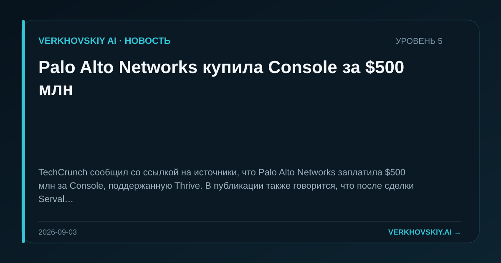

Palo Alto Networks купила Console за $500 млн
TechCrunch сообщил со ссылкой на источники, что Palo Alto Networks заплатила $500 млн за Console, поддержанную Thrive. В публикации также говорится, что после сделки Serval остается фактическим лидером среди стартапов в AI-автоматизации IT-сервисов. Почему это важно: Кибербезопасность и AI-автоматизация IT-сервисов начинают сходиться через M&A. Это меняет специализацию поставщиков: защита инфраструктуры включает автоматизированное обслуживание самой IT-среды.